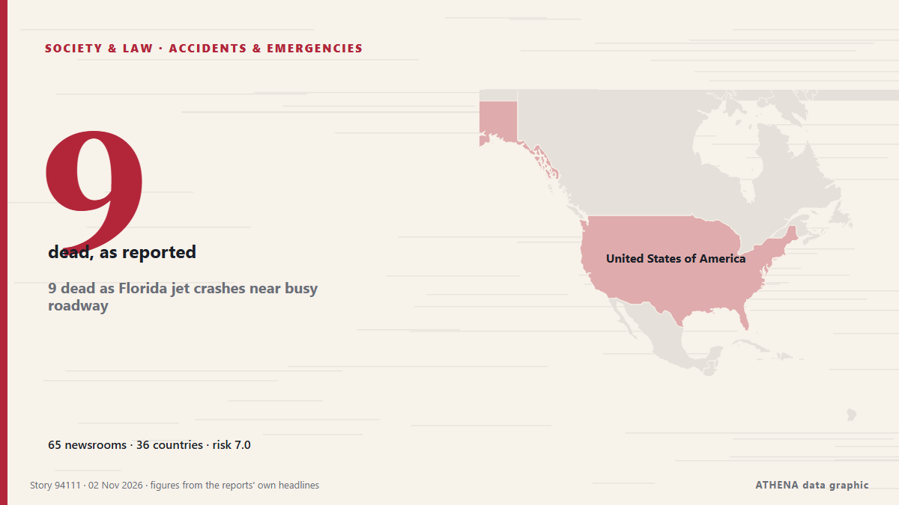

Society, Law & Public Policy

Accidents & emergencies9 dead as Florida jet crashes near busy roadway
A business jet carrying nine people nose-dived into a South Florida neighborhood Sunday and erupted into a giant fireball that appeared to just miss homes near a busy roadway. from The Canadian Press (via CityNews)
| 20 Oct | 45 |
|---|---|
| 21 Oct | 115 |
| 22 Oct | 222 |
| 23 Oct | 188 |
| 24 Oct | 120 |
| 25 Oct | 131 |
| 26 Oct | 319 |
| 27 Oct | 311 |
| 28 Oct | 291 |
| 29 Oct | 261 |
| 30 Oct | 297 |
| 31 Oct | 138 |
| 1 Nov | 143 |
| 2 Nov | 46 |
Cambridge professor confirmed dead after Spain train crash kills 69 people
Dr Marta Shahbazi, an affiliate associate professor at Cambridge University, has been confirmed dead after a train crash in Los Yébenes, Toledo. from Chronicle Live (Newcastle)
UK police say 325 people were arrested at Palestine Action demo
British police arrest 139 Palestine Action supporters in London and Edinburgh ahead of a Supreme Court appeal challenging the UK government's ban. from The New Arab
France launches 'attempted murder' probe after petrol bomb attacks on security forces
PARIS: France on Sunday launched an attempted murder probe after petrol bombs were thrown at security forces during Paris protests, as footage of an officer in flames sparked outrage. from New Straits Times
Thousands of volunteers build 108 stupas in a day in Bhutan's Gelephu Mindfulness City
Buddhist masters have gathered in Gelephu, Bhutan, to witness the construction of 108 stupas in a single day. from ABC News (International)
Third weekend of protests in France as youth-led rallies sweep Europe
The Interior Ministry told reporters that 70,000 people are estimated to have turned out for the main protest in Paris. from The Irish News (Belfast)
Multiple shootings on Halloween leaves 4 dead, 15 injured
At least 3 victims remain in critical condition following shooting at Fairfield mall, as police search for suspect. from Express Tribune
Portuguese police clash with housing protesters, arrest 13
Riot police clashed with housing protesters in Lisbon and Porto, arresting 13 and injuring several demonstrators. from Arab News
USA Clock Change: Daylight Saving Time Ends November 1
Most of the United States will turn clocks back one hour on Sunday, November 1, restoring the usual winter time difference with Greece after a week in which the gap was one hour smaller. from Greek Reporter
Police probe Jeffrey Epstein’s time spent at Balmoral with Andrew Mountbatten-Windsor
Scottish police are investigating the time convicted sex offender Jeffrey Epstein spent with Andrew Mountbatten-Windsor at Balmoral, a private royal estate in Scotland which is a favored retreat for… from Egypt Independent
Poland's Constitutional Court crisis deepens as judges allege coup attempt
Poland has been plunged into a constitutional confrontation after police entered the Constitutional Tribunal and its president was reportedly suspended from office, prompting allegations of a coup… from AzerNews
Police watchdog to open probe over letter about Meghan Markle's father
The Metropolitan Police acknowledged receiving a letter in 2019 regarding accusations about Meghan Markle’s father but did not share this information with other law agencies. from Arab News
France deploys 70,000 police officers to prepare for new wave of protests on Halloween
Emmanuel Macron's government deploys 70,000 police officers as France braces for a third week of intense protests amid over $1 billion in losses. from Fox News (World)
Police clear new Lisbon housing protest camp after thousands rally
LISBON, Nov 1 - Police moved into Lisbon's Rossio Square on Sunday to clear a tent camp erected after thousands marched demanding Portugal's minority centre-right government withdraw a rental bill… from The Straits Times
Polish president calls crisis talks after court standoff
Karol Nawrocki cut short a trip to Senegal and returned to Warsaw. from Euractiv
Spanish village gathers for memorial Mass for train crash victims
Investigators are looking into the cause of one of Europe's deadliest rail disasters this century. from CNA (Channel NewsAsia)
Poland FM: Tribunal move 'not elegant,' but necessary
Poland's Foreign Minister Radoslaw Sikorski stated on Saturday that last night's police deployment at the Polish Constitutional Tribunal in Warsaw was "not elegant," but still better than an… from AzerNews
EU’s new levy on parcels kicks in
BRUSSELS, Belgium: The European Union imposed a two-euro (US$2.25) handling fee on packages from outside the 27-nation bloc on Sunday in a bid to curb the influx from China. from New Straits Times
Egypt minibus crash outside Cairo kills 10, injures 24
The accident was the latest in a string of fatal road incidents in Egypt, where traffic accidents remain a persistent public safety challenge. from Free Malaysia Today
Sarkodie mourns Ghanaian teenager shot dead in New York
Ghanaian rapper Michael Owusu Addo, popularly known as Sarkodie, has expressed sorrow over the death of a Ghanaian teenager, Javits, who was reportedly shot in the abdomen while walking near a school… from MyJoyOnline
Hong Kong has released the full report on Tai Po fire tragedy. Here’s all you need to know
We have put together 10 stories from our coverage on the full report of the Wang Fuk Court fire, released almost a year since the tragedy claimed 168 lives. from South China Morning Post
India helicopter crash in Himalayas kills 6
Police said efforts were under way to recover the bodies from the remote crash site, while the cause of the accident remained unknown. from Free Malaysia Today
Mass protests sweep Italy during nationwide strike
Grassroots union Unione Sindacale di Base called 24-hour general strike, with protests planned in more than 40 cities. from Express Tribune
What does the shooting of a Kuno cheetah cub mean for Project Cheetah? | Explained
A 19-month-old male cub, KNG22, died on Tuesday (October 27, 2026) after being shot outside Kuno National Park, the first such case since Project Cheetah began in 2022; the Centre and Madhya Pradesh… from The Hindu
Gen Z protests reach Germany as over 160,000 expected at Halloween rallies
Demands include opposing compulsory military service and investing in education amid rising costs. from The Straits Times
Polish riot police deployed after court chief suspended
The court frequently ruled in favour of Polish legislation over European Union law. from Euractiv
DSI probes relatives of Chabad leader Kantor and 19 firms
Relatives of the Chabad network’s leader in Thailand, 19 companies linked to him and his land holdings are now under investigation, after the government revoked his Thai citizenship. from The Thaiger
Third weekend of protests in France as youth-led rallies sweep Europe
The Interior Ministry told reporters that 70,000 people are estimated to have turned out for the main protest in Paris. from The Irish News (Belfast)
New York state police to take over sexual assault complaints at Cornell University
New York state police will take over future sexual assault investigations at Cornell University, Governor Kathy Hochul said… from BusinessWorld
Seoul fears being sidelined as US reaches out to North Korea
With ties between South Korea and the Trump administration strained, the South Korean government worries that Donald Trump's pursuit of a diplomatic breakthrough with Kim Jong Un may come at Seoul's… from DW English
Fears of violence as France braces for Halloween protests
France will deploy some 70,000 police officers in Paris and other cities ahead of a new round of nationwide protests on Saturday, with Interior Minister Laurent Nuñez warning of a "very high risk of… from France 24 English
'We don't work for war': Dockworkers strike at 113 ports across 5 continents
Strikes take place in countries including Greece, France, Italy, India, Türkiye, Germany, opposing arms transfers to Israel. from Anadolu Agency (English)
Syrian Hacker Behind Fake Tweet That Triggered $136 Billion Market Drop Gets 42 Months in Prison
Ahmad Umar Agha, a Syrian Electronic Army hacker known online as "Th3Pr0," has been sentenced by a U.S. federal court to 42 months in prison for his role in a hacking conspiracy that targeted Western… from The Hacker News
Poland's president returns as court crisis escalates
Polish President Karol Nawrocki turned back to Poland while en route to Senegal after a far-right ally was suspended as head of the country's top court. from RTÉ News
Humanitarian aid being delivered to Oleshky, 25 buses with 750 seats ready for evacuation – Lubinets
Ukraine's Human Rights Commissioner, Dmytro Lubinets, said that 25 buses with a total capacity of 750 seats had been prepared to evacuate residents of Oleshky, along with ambulances for people with… from Ukrinform (English)